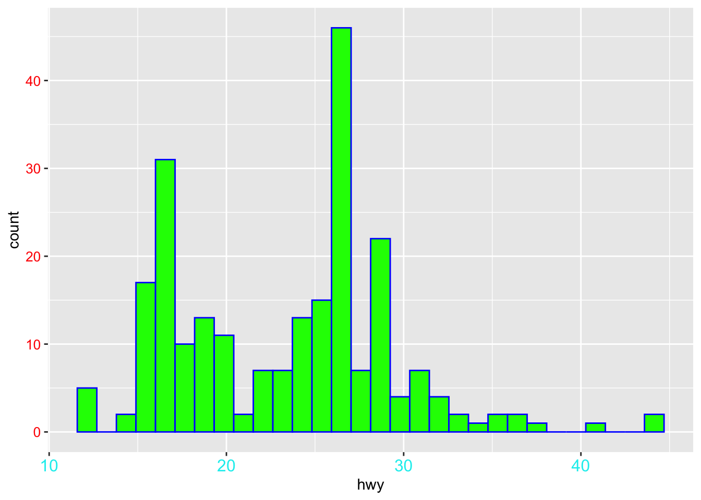
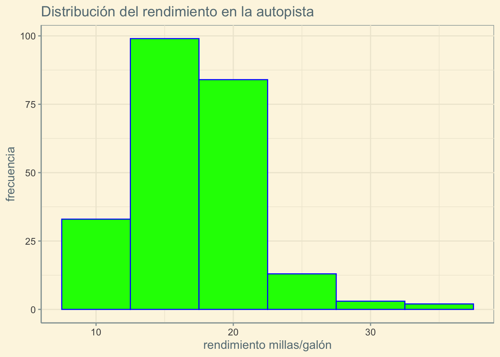

El paquete ggplot2 es un paquete que hace gráficas a partir de los datos. Primero instalarlo con install.packages("ggplot2") y activarlo con library(ggplot2). Los paquetes ggExtra y ggthemes son paquetes adicionales que ayudan a mejorar sus gráficas, de igual forma se instalan y se activan.
1.1 Usos de ggplot2
Activamos los paquetes y cargamos el archivo de datos mpg del mismo. Haga data(package="ggplot2") en la consola de R, para ver los archivos de datos del paquete. Usaremos el archivo de datos mpg. El paquete ggplot2 trabaja únicamente a partir de un dataframe o tibble.
`stat_bin()` using `bins = 30`. Pick better value with `binwidth`.

Código
ggplot(mpg, aes(x=cty)) +geom_histogram(color='blue', fill='green',binwidth=5) +ggtitle("Distribución del rendimiento en la autopista") +xlab("rendimiento millas/galón") +ylab("frecuencia") +theme_solarized()

6 Extensiones de ggplot2
Código
p <-ggplot(mpg) +geom_point(aes(cty,hwy)) ggMarginal(p, type ="histogram",xparams =list(fill =4),yparams =list(fill =3))
7 Etiquetas en los gráficos
Código
mtcars
Código
p <-ggplot(mtcars, aes(wt, mpg, label =rownames(mtcars)))p +geom_label()